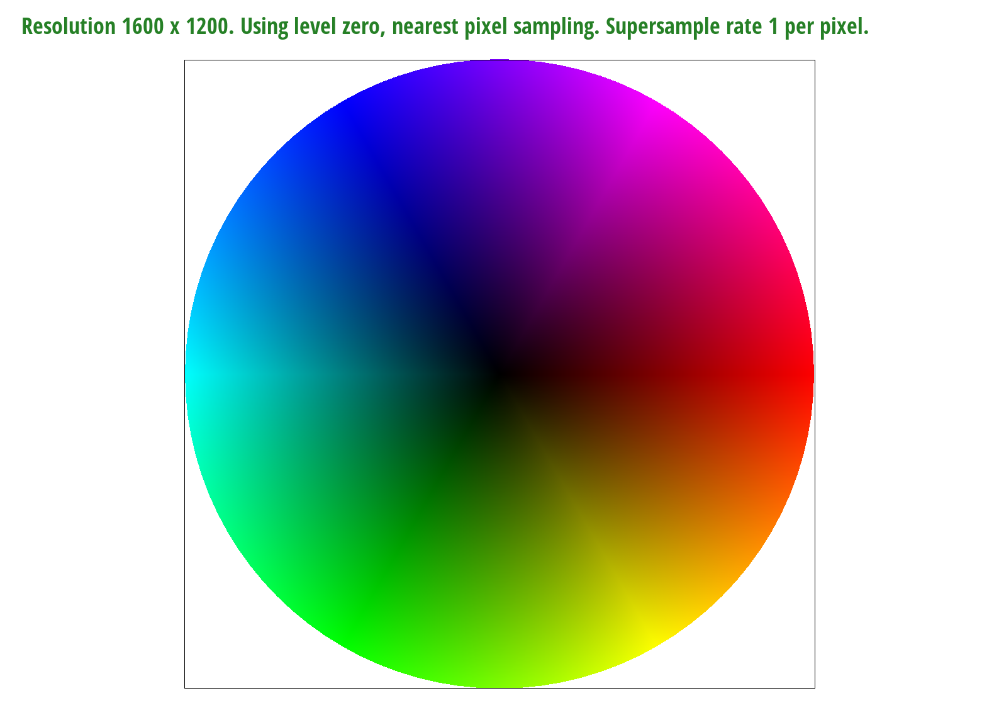

Overview
This project gave me a deep understanding of how rasterization, linear interpolation, and antialiasing, and sampling works. Each task built on the other, so I was able to understand how a triangle was rasterized by one color at a time, then how to interpolate the colors to make a triangle have colors that look more blended, and finally how to apply texture to each triangle (or pixel). I was able to implement supersampling, bilinear sampling, nearest sampling, and (mipmap) level sampling, and see not only how each works, but how each compare with one another. I understand the benefits of using each antialiasing method, and its cost-benefit analysis. I was also able to see how using matrix transformations renders an image (and creates a human model).
It was interesting to see how the images rendered after each task, and how they evolved to look more and more complex and clear (or of high quality). I liked seeing the end result after each task is finished, and comparing it to the previous tasks' images. I like to see how each progressed and looked better.
I did, however, have a really hard time debugging and implementing the procedures in the spec. The instructions were a bit vague and hard to follow. However, the staff was really helpful in clarifying a lot of the misunderstandings.
Section I: Rasterization
Task 1: Rasterizing Single-Color Triangles
Prompt
- Walk through how you rasterize triangles in your own words.
- Explain how your algorithm is no worse than one that checks each sample within the bounding box of the triangle.
- Show a png screenshot of basic/test4.svg with the default viewing parameters and with the pixel inspector centered on an interesting part of the scene.
Answer
In order to rasterize my triangle, I found the maximum and minimum x and y coordinates to locate the bounds of the triangle (i.e. a bounded box). Using those bounds, I iterated through the triangle (moving down and to the right) and selected sample points. For each sample point, I checked if it was inside the triangle by using two helper functions.
The first helper function implemented the line test, where it calculated the line from one of the triangle's vertex to another, calculate the normal vector (perpendicular to the line created previously), and then calculated the sample vector (where it takes our same point and the origin/vertex point of the first line created above and calculates a line). Once all the necessary lines (or vectors) are created, the helper calculates the dot product between the normal vector and the sample vector, and returns the final number.
The second helper function implements the inside() function described in lecture, where it tests if the sample point (x,y) is inside the trianlge. This helper function calls on the first helper function 3 times, and tests whether the given sample point is within all three lines of the triangle. If all the line tests have the same sign (and any of the tests could be 0), then the sample point is inside the triangle. This helper function returns a boolean: it returns true if the sample point is within the triangle, and false if it is not.
Finally, back in the main function (the rasterize_triangle function), it recieves the boolean that states whether each sample point (iterated through the triangle's bounded box) is inside the triangle. If it is, it rasterizes the point by calling "rasterize_point(x + 0.5, y + 0.5, color);". Once the iteration is done, the triangle will be fully rasterized.
Rasterized Triangles Image Generated:
Task 2: Antialiasing by Supersampling
Prompt
- Walk through your supersampling algorithm and data structures. Why is supersampling useful? What modifications did you make to the rasterization pipeline in the process? Explain how you used supersampling to antialias your triangles.
- Show png screenshots of basic/test4.svg with the default viewing parameters and sample rates 1, 4, and 16 to compare them side-by-side. Position the pixel inspector over an area that showcases the effect dramatically; for example, a very skinny triangle corner. Explain why these results are observed.
Answer
For this task, I used the RasterizerImp::sample_buffer in order to store the the samples in buffer memory. In order to supersample, the (existing) sample buffer must be expanded in order to fit more sample points in it (thus giving it a "higher resolution"). Once the sample buffer was resized accordingly (in both "set_framebuffer)target()" and "set_sample_rate"), the "rasterize_triangle()" and "resolve_to_framebuffer()" were altered accordingly.
In the "rasterize_triangle()" function, the for loop(s) iterating through the (bounded) triangle had additional for loops that sampled at each sample pixel's subpixel. Then, the "inside_triangle_test()" helper function (that was previously explained in Task 1) checked whether or not the subpixel's sample point was inside the triangle. If the subpixel's sample point is inside the triangle, it is rasterized by directly inputting the sample's color into the sample_buffer (where its index is: (counter * width * height) + (y * width) + x), where the counter tracks the iteration of the subpixels).
In the "resolve_to_framebuffer()" function, the sample buffer is downsampled by averaging all of the subpixels' values/colors (for each pixel to create one avergaed pixel), and then sent to the frame buffer to be displayed on the screen. The same iterative process and indexing (into the sample buffer) is applied as in the "rasterize_triangle()" function. However, the bounds differ; it iterates through the entire image instead of only interating through a bounded triangle.
Supersampling is a useful tool for antialiasing; it gets rid of high frequencies within an image, such as jaggies. Supersampling does use a lot of computational power, but it also removes high frequencies (or frequencies above the Nyquist rate) quite well.
Image Generated:
|
|
|
|
|

|
Task 3: Transforms
Prompt
Create an updated version of svg/transforms/robot.svg with cubeman doing something more interesting, like waving or running. Feel free to change his colors or proportions to suit your creativity. Save your svg file as my_robot.svg in your docs/ directory and show a png screenshot of your rendered drawing in your write-up. Explain what you were trying to do with cubeman in words.
Answer
I tried to create a hand and make it wave. Cubeman says hi. :)
Image Generated:
Section II: Sampling
Task 4: Barycentric coordinates
Prompt
- Explain barycentric coordinates in your own words and use an image to aid you in your explanation. One idea is to use a svg file that plots a single triangle with one red, one green, and one blue vertex, which should produce a smoothly blended color triangle.
- Show a png screenshot of svg/basic/test7.svg with default viewing parameters and sample rate 1. If you make any additional images with color gradients, include them.
Answer
In order to calculate the barycentric coordinates, I used three equations and linear algebra to find the unknown variables (alpha, beta, and gamma). The first two equations I used were: x = (alpha* A_x) + (beta* B_x) + (gamma* C_x), and y = (alpha* A_y) + (beta* B_y) + (gamma* C_y), where A,B, and C are the triangle's three points. The third equation used was: alpha + beta + gamma = 1. Using these three equations, I created a matrix M, and followed the structure: Mx = b. In this case, the matrix M contained the A, B, and C triangle coordinates (of the x axis as one row vector and the y axis as another row vector), and the last row was all 1s (which incorporates the third equation stated previously). The x vector in the structure "Mx = b" were the barycentric coordinates (alpha, beta, and gamma), and the b vector was the (x,y) homogenous coordinates. Once that structure was created, I calculate the matrix M's inverse so that: x = M(^-1) * b, in order to get the values of x (i.e. the baycentric coordinates).
Once I calculated the baycentric coordinates, I used those coordinates to interpolate the color for each sample point inside the triangle. In order to get the sample points within a triangle, I followed the same steps as the "rasterize_triangle()" function. Using a helper function, I interpolated the color values of each pixel by using linear algebra, where the matrix M contained the color coordinates (where R, B, and G are row vectors), the vecotr x contained the calculated baycentric coordinates, and the resulting vector b (that is produced once M is multiplied with x using the dot product) was the interpolated color values.
Finally, once the interpolated color values were obtained, I rasterized that pixel with that color value.
Image Generated:
|  |
Part 5: "Pixel sampling" for texture mapping
Prompt
- Explain pixel sampling in your own words and describe how you implemented it to perform texture mapping. Briefly discuss the two different pixel sampling methods, nearest and bilinear.
- Check out the svg files in the svg/texmap/ directory. Use the pixel inspector to find a good example of where bilinear sampling clearly defeats nearest sampling. Show and compare four png screenshots using nearest sampling at 1 sample per pixel, nearest sampling at 16 samples per pixel, bilinear sampling at 1 sample per pixel, and bilinear sampling at 16 samples per pixel.
- Comment on the relative differences. Discuss when there will be a large difference between the two methods and why.
Answer
In the "rasterize_textured_triangl()", the iterative process of checking each sample point and calculating whether the sample point is inside the triangle is implemented first (just like in the "rasterize_triangl()" function). Then, if the (x, y) sample point is in the sample point, their baycentric coordinates are calculated (which is the same process described in tast 4), producing the 3D Vector that contains alpha, beta, and gamma. Once the baycentric coordinates are obtianed, they are used to map the (x,y) sample points onto the u-v plane (giving us the (u,v) coordinates).
Once the (u,v) coordinates were obtained, the Texture object (given as an argument in the main function, "rasterize_textured_triangl()") was sampled either bilinearly or by nearest.
In order to perform the "nearest" sampling method, the uv coordinates were scaled by mip-map's width (minus 1) and height (minus 1) and rounded to the nearest integer. Since the mipmaps are zero-indexed and the uv coordinates are in the range of [0,1], the uv coordinates need to "stretched" or scaled accordingly in order to correctly index into the mipmap's data structure and obtain the texels (the texture's pixel/color).
In order to perform the "bilinear" sampling method, the uv coordinates were scaled by mip-map's width (minus 1) and height (minus 1) in order to correctly index into the mipmap's data structure and obtain the texel (the texture's pixel/color) samples. For bilinear sampling, 4 of tixel samples located nearest to the given uv coordinates are obtained. Once the 4 texel samples are obtained, they are used to linearly interpolate the texel value at the given uv coordinate. Since there are 4 texel samples, there are 2 linear interpolations: one that happens across the horizontal axis and one that happens across the vertical axis (thus making it a BILINEAR interpolation).
First, fractional offsets are calculated to represent the relative distance between the given uv coordinate and one of the four texel sample locations. Then, a helper function is used to calculate the linear interpolation between two (of the four texel coordinate) points and the given uv coordinate (across an axis), and returns a interpolated texel sample. This helper function, called "lerp(offset, first_sample, second_sample)", is used twice accross the horizontal axis and generates two interpolated texel samples that "line up" with the given uv coordinate in the horizontal axis. Then, the helper function is used once more across the vertical axis and generates the final interpolated texel sample that gives us the texel sample at the given uv-coordinate.
When looking at the images rendered, the image that has a picture of UC Berkeley's campanile stood out to me. When I chose the "bilinear sampling" method, I noticed that the bricks looked more aligned in the image. Also, the clock looked more circular (and more pronounced).
Also, when looking at the UC Berkeley image, I noticed that the letters were easier to read when I used the "nearest sampling" method. However, the outer edges of that same logo was smoother when using the "bilinear sampling" method.
Image Generated For When Bilinear Sampling Beats Nearest Sampling:
|
|
|
|
|
|
Task 6: "Level sampling" with mipmaps for texture mapping
Prompt
- Explain level sampling in your own words and describe how you implemented it for texture mapping.
- You can now adjust your sampling technique by selecting pixel sampling, level sampling, or the number of samples per pixel. Describe the tradeoffs between speed, memory usage, and antialiasing power between the three various techniques.
- Using a png file you find yourself, show us four versions of the image, using the combinations of L_ZERO and P_NEAREST, L_ZERO and P_LINEAR, L_NEAREST and P_NEAREST, as well as L_NEAREST and P_LINEAR.
* To use your own png, make a copy of one of the existing svg files in svg/texmap/ (or create your own modelled after one of the provided svg files). Then, near the top of the file, change the texture filename to point to your own png. From there, you can run ./draw and pass in that svg file to render it and then save a screenshot of your results.
* Note: Choose a png that showcases the different sampling effects well. You may also want to zoom in/out, use the pixel inspector, etc. to demonstrate the differences.
Answer
For this task, the "rasterize_textured_triangle()" was updated so that for each sample point, not only are the barycentric (u,v) coordinates calculated, but also its Jacobian barycentric coordinates: (du/dx, dv/dx) and (du/dy, dv/dy). Then, using the jacorbian coordinates, I was able to calculate the appropriate mipmap level (by finding the D and L variables described in lecture). Once the mipmap level was calculated (in the helper function, "get_level()" in the Texture class), the level was rounded to an integer by either approximating it to the nearest level (i.e. by rounding), or by linearly interpolating the level. After that, either the "sample_bilinear(Vector2D uv, int level)" or the "sample_bilinear(Vector2D uv, int level)" is called (based on whether the user wants to sample using the nearest sampling method or the bilinear sampling method), where the (u,v) baycentric coordinates and the calculated (and approximated) mipmap level are passed in. Once the sampling methods are called, the "rasterize_textured_triangle()" function behaves as it does in Task 5. Now, the mipmap levels can be adjusted by the user.
When pixel sampling, the nearest sampling method is a lot simpler and requires less computational power, but the bilinear sample gives a more accurate (and linearly interpolated) sample. When level sampling, the textile pixels in the image is filtered (where high frequencies are attenuated) and is downsampled, thus making the image's (textile) objects appear a lot more smoother. Although level sampling does take some computational power, using mimaps efficiently downsamples the image (after the high frequencies are filtered out) and lessens the amount of computational power needed. When supersampling, each pixel is seperated into subpixels and (creating a high resolution buffer), and are then averaged/down-sampled. Supersampling aliases very well, but the computational cost (when supersampling is applied) is very high.
Image Generated:
|
|

|

|
|
Note: Although all of the functions were implemented based on the spec's directions and the lecture's descriptions, there were a few bugs in the code that I could not find. This created images that had a bit of discoloration.